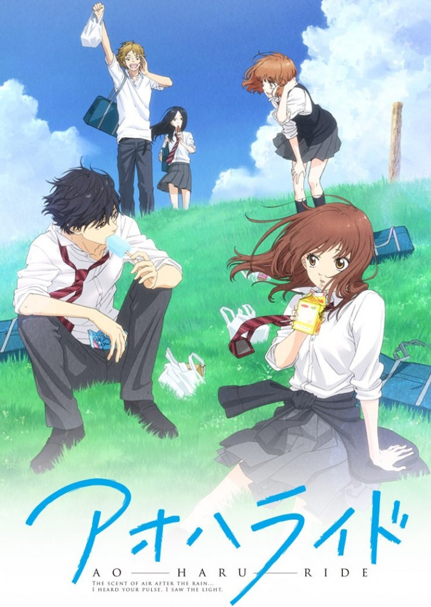
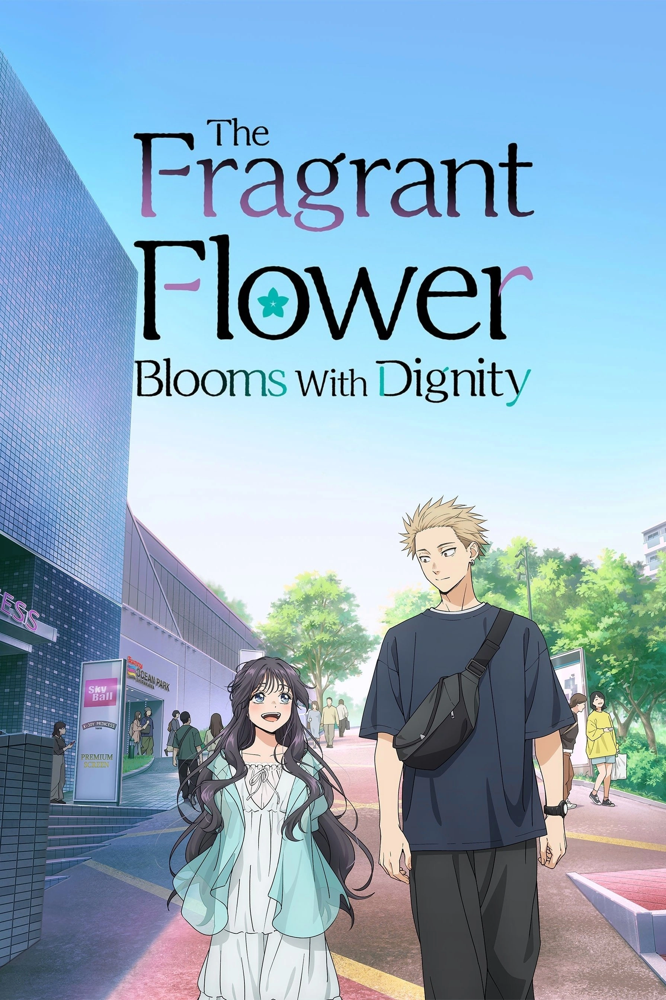
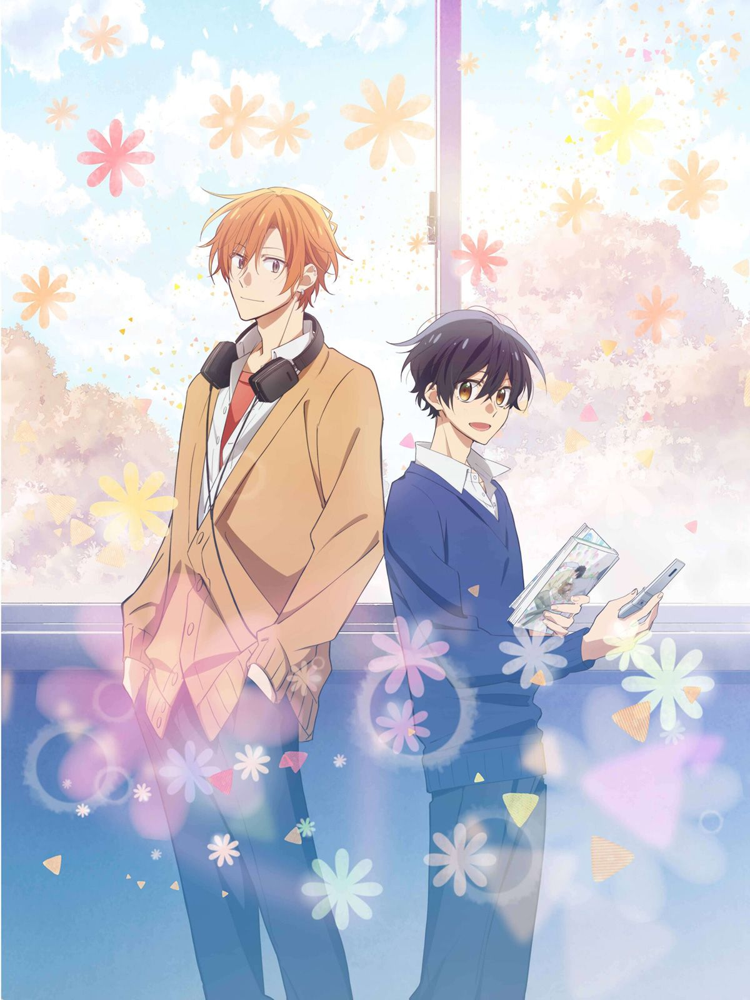
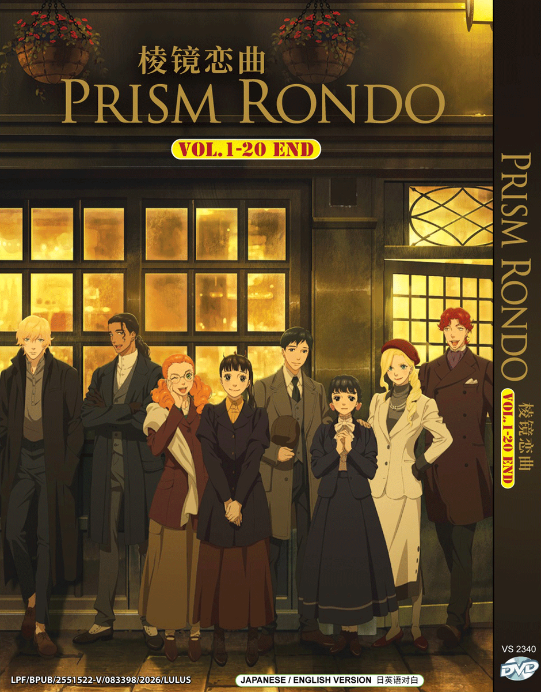
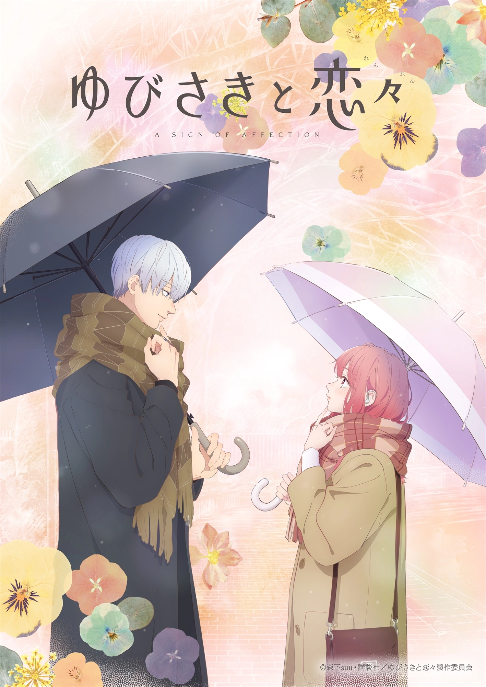
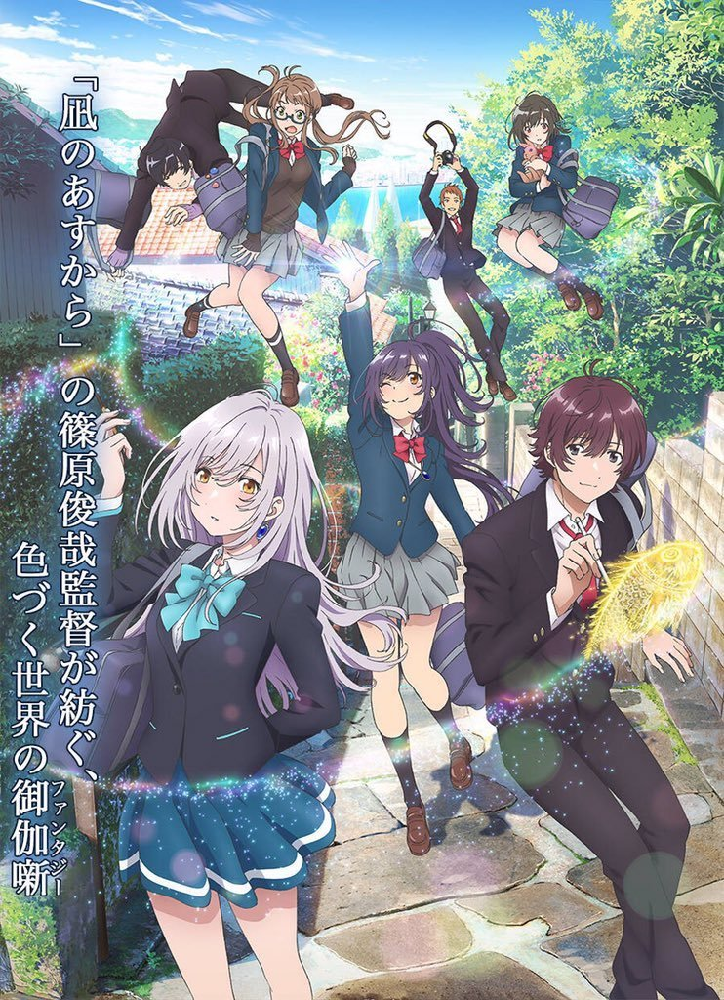
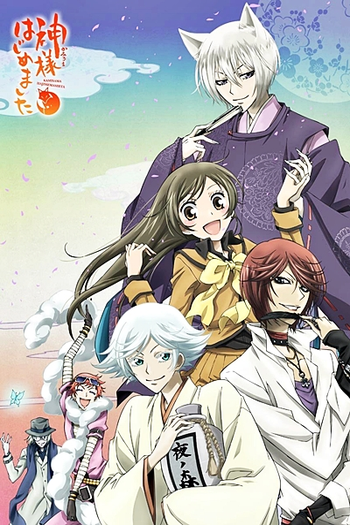
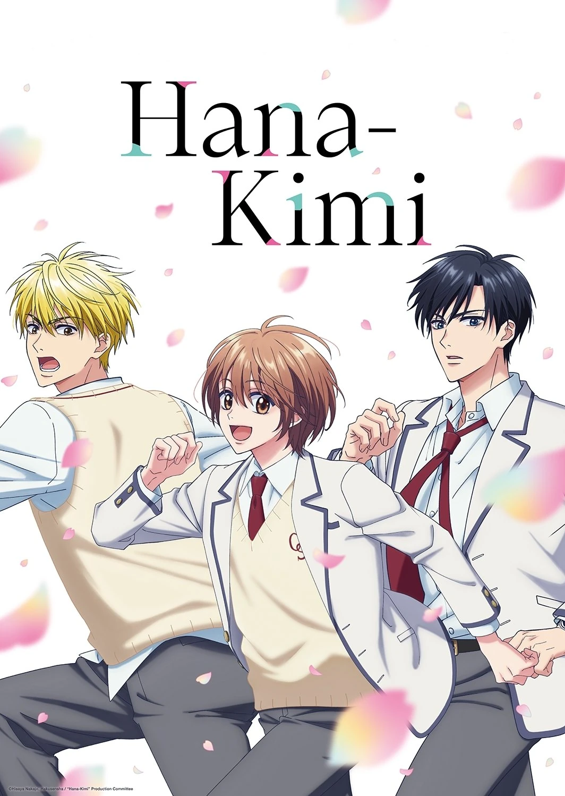
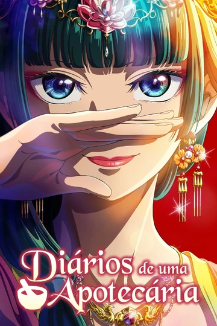

O gênero romance nos animes foca no desenvolvimento de relações amorosas entre personagens, explorando sentimentos como
paixão, insegurança, ciúme e afeto. As histórias costumam acompanhar a evolução desses vínculos, desde os primeiros
encontros e mal-entendidos até confissões e momentos decisivos, criando uma forte conexão emocional com o público.
Esse gênero pode aparecer de forma pura ou combinado com outros, como comédia, drama e escolar, o que amplia a variedade
de narrativas — desde romances leves e divertidos até histórias mais intensas e emocionais. Também é comum que o romance
seja usado para desenvolver os personagens, mostrando seu crescimento pessoal, suas dificuldades em se expressar e a
importância das relações na construção de suas identidades.

Ao Haru Ride é um romance escolar que aborda amadurecimento, mudanças e os sentimentos que persistem ao
longo do tempo.
A história acompanha Futaba Yoshioka, uma garota que, no ensino fundamental, era delicada e feminina, mas acabou sendo
isolada por outras meninas. Ao entrar no ensino médio, ela decide mudar completamente sua imagem, adotando um jeito mais
“desleixado” para evitar novos julgamentos.
Tudo muda quando ela reencontra Kou Mabuchi, seu primeiro amor. No entanto, Kou não é mais o mesmo garoto gentil de
antes — ele agora é mais frio, distante e carrega problemas do passado que influenciam seu comportamento.
À medida que se reaproximam, Futaba tenta entender o que aconteceu com ele, enquanto também enfrenta suas próprias
inseguranças e relações com amigos. Entre desencontros, sentimentos não resolvidos e crescimento pessoal, a história
mostra como o amor pode evoluir junto com as pessoas.
Com um tom sensível e realista, a obra retrata as dificuldades da adolescência e a busca por identidade, destacando que,
às vezes, para seguir em frente, é preciso encarar o passado.

Kaoru Hana wa Rin to Saku é um romance escolar delicado que gira em torno de diferenças sociais, preconceitos
e conexões inesperadas.
A história acompanha Rintaro Tsumugi, um garoto de aparência intimidadora que estuda em uma escola conhecida por abrigar alunos
problemáticos. Apesar disso, ele tem uma personalidade gentil e trabalha na confeitaria da família, onde demonstra seu lado mais
sensível.
Tudo começa a mudar quando ele conhece Kaoruko Waguri, uma garota educada e gentil que estuda em uma escola de elite próxima.
Mesmo vindo de mundos completamente diferentes — inclusive com rivalidade entre as escolas — os dois começam a se aproximar através
de encontros simples e conversas sinceras.
À medida que o relacionamento se desenvolve, ambos precisam lidar com julgamentos externos, expectativas sociais e suas próprias
inseguranças. A obra destaca como a empatia e o respeito podem superar barreiras criadas por aparências e estereótipos.
Com uma narrativa leve e emocional, a história foca no crescimento dos personagens e na construção de um vínculo genuíno, mostrando
que conexões verdadeiras podem florescer mesmo nos contextos mais improváveis.

Sasaki to Miyano é um romance escolar do gênero boys’ love (BL) que acompanha o desenvolvimento de uma relação doce
e gradual entre dois estudantes do ensino médio.
A história começa quando Miyano Yoshikazu, um garoto tímido e fã de mangás BL, chama a atenção de Shumei Sasaki, um veterano mais
extrovertido. Curioso sobre os interesses de Miyano, Sasaki se aproxima dele, e os dois passam a conviver cada vez mais.
Com o tempo, a amizade evolui para algo mais profundo, mas de forma natural e sensível, respeitando o ritmo e as inseguranças de Miyano,
que ainda está entendendo seus próprios sentimentos. Sasaki, por sua vez, demonstra carinho e paciência, criando um ambiente seguro para
que essa conexão cresça.
Com foco em momentos simples do cotidiano, a obra se destaca pela delicadeza ao retratar o primeiro amor, a descoberta da própria identidade
e a importância da comunicação em um relacionamento.
Leve, acolhedor e emocional, o anime conquista por sua abordagem realista e pelo desenvolvimento cuidadoso dos personagens.

Prism Rondo é uma obra que mistura música, emoção e relações humanas, acompanhando personagens conectados pelo desejo de
se expressar através da arte.
A história gira em torno de um grupo de jovens com personalidades e histórias diferentes, que acabam se unindo por meio da música — especialmente
em torno da ideia de criar algo único juntos. Cada personagem carrega seus próprios conflitos, inseguranças e sonhos, e encontra na música uma
forma de lidar com esses sentimentos.
Ao longo da trama, o grupo enfrenta desafios como diferenças criativas, pressão externa e dificuldades pessoais, enquanto tenta evoluir tanto
individualmente quanto como equipe. As apresentações musicais se tornam momentos-chave, onde emoções reprimidas vêm à tona e os laços entre eles
se fortalecem.
Com uma narrativa sensível e foco no crescimento dos personagens, Prism Rondo explora temas como amizade, identidade e superação, mostrando como
a arte pode unir pessoas e transformar vidas.

Yubisaki to Renren é um romance universitário sensível que destaca a comunicação, a empatia e a descoberta do amor em meio às
diferenças.
A história acompanha Yuki Itose, uma jovem surda que vive em um mundo mais silencioso e se comunica principalmente por linguagem de sinais e
leitura labial. Sua rotina muda quando ela conhece Itsuomi Nagi, um estudante gentil, curioso e apaixonado por viagens.
Diferente de muitos, Itsuomi não se afasta por não saber se comunicar perfeitamente com Yuki — pelo contrário, ele demonstra interesse genuíno
em entendê-la e se aproximar de seu mundo. Aos poucos, os dois constroem uma relação baseada em respeito, paciência e descobertas mútuas.
Com uma atmosfera leve e emocional, a obra aborda não apenas o romance, mas também a inclusão, as barreiras de comunicação e a importância de
se conectar com o outro de forma sincera. É uma história delicada que valoriza os pequenos gestos e o crescimento conjunto dos personagens.

Irozuku Sekai no Ashita kara é um drama romântico com elementos de fantasia que mistura viagem no tempo, magia e amadurecimento
emocional.
A história acompanha Hitomi Tsukishiro, uma garota descendente de uma família de bruxas que perdeu a capacidade de ver cores devido a um trauma
emocional. Para ajudá-la, sua avó utiliza magia para enviá-la ao passado, onde Hitomi conhece uma versão mais jovem de sua família e novos amigos.
Nesse período, ela se aproxima de Yuito Aoi, um garoto apaixonado por desenho, cujas artes têm um efeito especial sobre ela: são as únicas coisas
que consegue enxergar em cores.
Ao conviver com esse novo grupo, Hitomi começa a redescobrir sentimentos, superar suas dores e entender melhor a si mesma. A jornada não é apenas
sobre voltar ao seu tempo, mas sobre recuperar aquilo que perdeu dentro de si.
Com uma estética visual marcante e uma narrativa sensível, a obra aborda temas como emoções reprimidas, conexões humanas e a beleza de enxergar o
mundo — tanto por fora quanto por dentro.

Chihayafuru é um anime que mistura esporte, drama e romance, centrado no competitivo jogo tradicional japonês de cartas chamado
karuta.
A história acompanha Chihaya Ayase, uma garota enérgica que descobre sua paixão pelo karuta ao conhecer Arata Wataya, um talentoso jogador que a
inspira a seguir esse caminho. Ao lado de seu amigo de infância Taichi Mashima, ela decide formar um clube escolar dedicado ao esporte.
Determinada a se tornar a melhor jogadora do Japão, Chihaya enfrenta competições intensas, rivais habilidosos e desafios pessoais, enquanto aprende
sobre trabalho em equipe, disciplina e perseverança.
Além das partidas cheias de tensão e estratégia, a obra também desenvolve um delicado triângulo amoroso entre os protagonistas, explorando sentimentos
não resolvidos ao longo dos anos.
Com uma narrativa envolvente e emocionante, Chihayafuru destaca a beleza de um esporte pouco conhecido, ao mesmo tempo em que mostra o crescimento dos
personagens e a força de seus sonhos.

Kamisama Hajimemashita é uma comédia romântica com elementos sobrenaturais que acompanha a vida de Nanami Momozono, uma garota que,
após ser abandonada pelo pai e ficar sem casa, acaba se tornando… uma deusa da terra.
Tudo começa quando ela ajuda um homem misterioso, que, em agradecimento, entrega a ela um santuário — sem explicar que isso vem junto com a
responsabilidade de atuar como divindade local. Perdida nessa nova realidade, Nanami precisa aprender a lidar com espíritos, deveres divinos e situações
completamente fora do comum.
Nesse processo, ela conhece Tomoe, um familiar (espírito guardião) poderoso e de personalidade difícil, que inicialmente se recusa a aceitá-la. No
entanto, com o tempo, a convivência entre os dois evolui para uma relação cheia de provocações, parceria e sentimentos cada vez mais profundos.
Misturando humor, romance e fantasia, a obra explora o crescimento de Nanami enquanto ela aprende a assumir responsabilidades e encontrar seu lugar,
mostrando que até alguém comum pode se tornar especial quando acredita em si mesma.

Hanazakari no Kimitachi e é uma comédia romântica escolar cheia de situações divertidas e momentos emocionantes.
A história acompanha Mizuki Ashiya, uma garota que decide se disfarçar de garoto para entrar em um colégio masculino no Japão. Seu objetivo é ficar
próxima de seu ídolo, o atleta de salto em altura Izumi Sano, que parou de competir após um incidente.
Vivendo sob identidade secreta, Mizuki precisa lidar com os desafios de conviver em um ambiente totalmente masculino sem ser descoberta. Ao mesmo tempo,
ela tenta ajudar Sano a recuperar sua confiança e voltar ao esporte.
Durante essa jornada, surgem amizades, rivalidades e situações caóticas — especialmente com personagens excêntricos que suspeitam ou se envolvem nas
confusões do colégio.
Com muito humor, romance e momentos de superação, a obra explora temas como identidade, amizade e coragem, mostrando até onde alguém pode ir por aquilo
que acredita — e por quem ama.

Kusuriya no Hitorigoto é um drama histórico com mistério que acompanha Maomao, uma jovem inteligente e observadora apaixonada por
medicina e venenos.
Após ser sequestrada e vendida como serva no palácio imperial, Maomao tenta levar uma vida discreta. No entanto, sua curiosidade e vasto conhecimento
farmacêutico acabam chamando atenção quando ela resolve, anonimamente, um caso envolvendo a saúde dos herdeiros do imperador.
Isso desperta o interesse de Jinshi, um influente e misterioso oficial da corte, que passa a envolver Maomao em diversos incidentes dentro do palácio.
A partir daí, ela se vê constantemente lidando com intrigas, conspirações, envenenamentos e segredos da nobreza, usando sua inteligência para desvendar
mistérios enquanto tenta evitar problemas.
Com uma protagonista única e uma ambientação rica, a obra combina investigação, política e um toque sutil de humor, explorando os bastidores da corte
imperial e os perigos escondidos por trás de sua aparência luxuosa.
fonte:
Original do site.